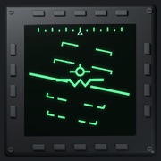

Follow a flight
DRIVE
Cabin Panel · shared flight
✈ Landed
Sharing has stopped
The traveller ended this share.
ETA
--:--
Height
---
Speed
---
To go
---
Loading…
Paste the link or code you were sent
Follow